Erts
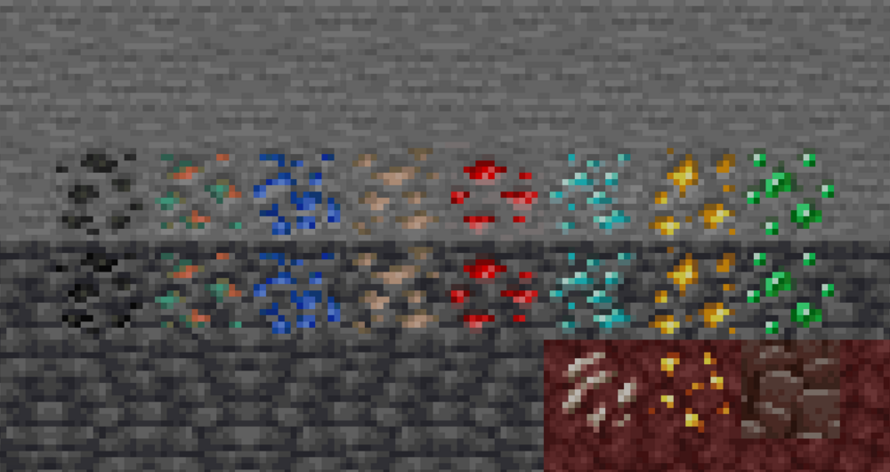
Ertsblokken zijn natuurlijk voorkomende bloksoorten die gevonden kunnen worden onder de grond, als een ertsblok gebroken wordt laat het het soort erts achter wat er in zat. Er zijn 10 soorten erts met elk hun eigen nut. Als negen stukken van hetzelfde erts bij elkaar worden gevoegd in een werkbank zorgt dat voor een blok gemaakt van dat erts, dit kan gebruikt worden om grote hoeveelheden compacter op te bergen of om te laten zien aan andere spelers dat je er veel van hebt door je woning ervan te maken. De blokken kunnen weer terugveranderd worden in ertsen door het blok in de werkbank te doen, je krijgt dan weer 9 erts terug.
Steenkool
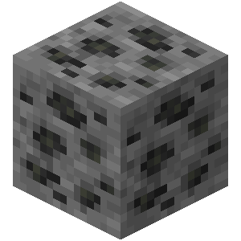 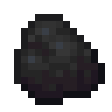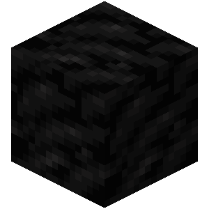
Steenkool wordt gebruikt als brandstof voor ovens of, wanneer samen met een stok gecombineerd, zorgt het voor een fakkel, wat licht geeft.
Ijzer
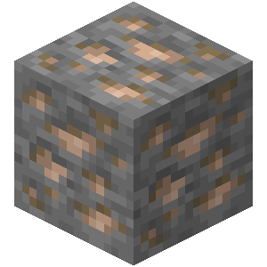 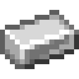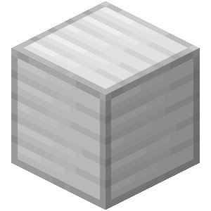
Ijzer wordt gebruikt voor harnassen, gereedschap, schilden en emmers. Naast het standaard gereedschap kan ijzer ook nog gebruikt worden voor scharen en aanstekers. Ijzer is het op 2 na sterkste harnas- en gereedchapssoort in het spel.
Goud
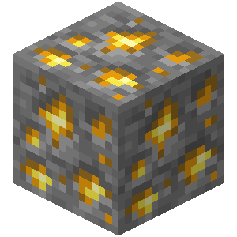 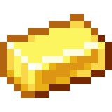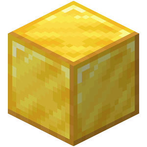
Goud wordt gebruikt voor harnassen, gereedschap en gouden appels en wortels. Goud is het op 1 na zwakste harnas- en gereedschapsoort in het spel (met alleen leer voor harnas en hout voor gereedchap eronder). Een gouden pikhouweel is de enige die het respectievelijke ertsblok niet succesvol kan slopen.
Diamant
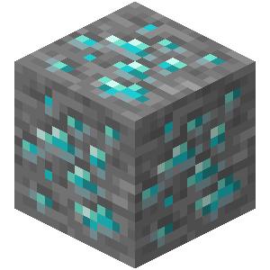  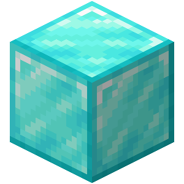
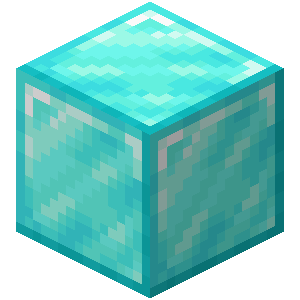
Diamant wordt gebruikt voor harnassen en gereedschap. Diamant is het op 1 na sterkste harnas- en gereedschapsoort in het spel.
Netheriet
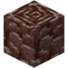 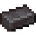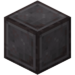
Netheriet wordt gebruikt voor harnassen en gereedschap. Netheriet is het sterkste harnas- en gereedschapsoort in het spel. Het kan alleen gevonden worden in de Onderwereld.
Smaragd
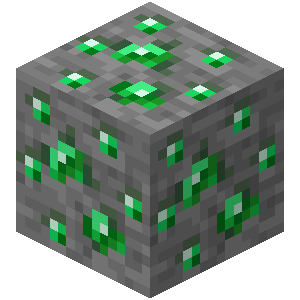  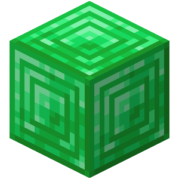
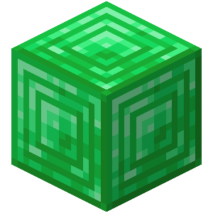
Smaragd wordt gebruikt als valuta om spullen te kopen en verkopen aan dorpelingen. Het ertsblok kan alleen gevonden worden in de bergen.
Roodsteen
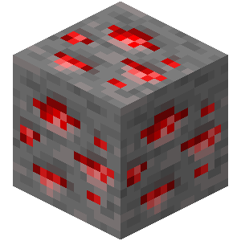 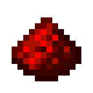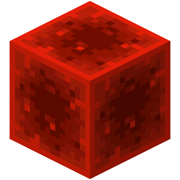
Roodsteen wordt gebruikt als een soort elektriciteit, waardoor je dingen kan van een dynamiet opblazen op afstand tot een rekenmachine maken in de game zelf.
Koper
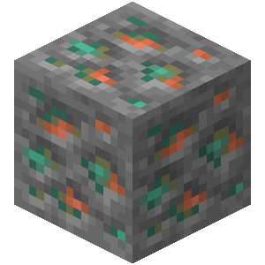  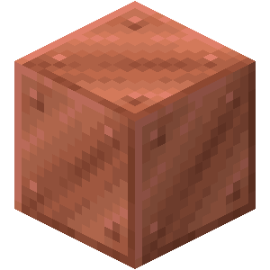
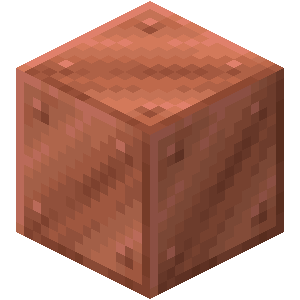
Koper wordt gebruikt als decoratie in blokvorm of voor een bliksemgeleider.
Lapis Lazuli
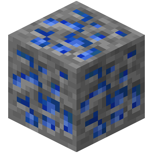 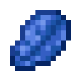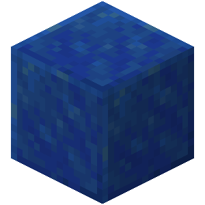
Lapis Lazuli wordt gebruikt om wapens en harnassen sterken te maken door middel van betovering, ook is het handig als blauwe kleurstof.
Kwarts
 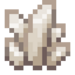
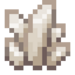
Kwarts wordt als een decoratief blok, door de witte kleur geeft het een deftig en luxueus gevoel. Het is ook niet het makkelijkste blok om te krijgen, aangezien het alleen te vinden is in de onderwereld.